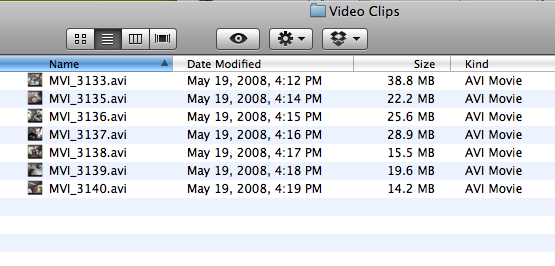
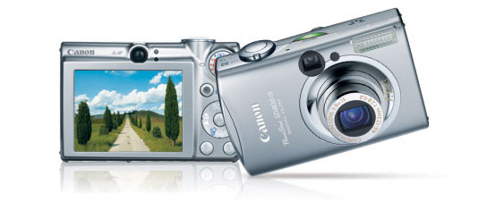

I have trained many journalists to use simple audio and video tools to tell stories. For an introduction to video editing, I use this finished video as an example.
For teaching, I provide the seven clips I used to create that video. You can see that I shot them in the space of about 7 minutes on one day* in 2008:
*The time of day was actually between 10 and 11 a.m. on May 19, 2008; apparently I didn't change the time zone on my camera!
To shoot these clips, I used a point-and-shoot still camera similar to this one, which I bought for about $200 in 2005:
Before I began shooting, I watched the woman making the crepes, and her helper, for probably 10 minutes or so. I walked around, made eye contact, smiled, and generally developed my interest in the work they were doing. I watched until I understood the full process. I shot a few stills. Then I started to shoot video.
Taking the time to observe, without using your camera, gives you an opportunity to plan. You can visualize what you need in the finished video. After that, you can simply shoot what you need. This is very efficient. It makes the job of editing easier and faster.
You can download these unedited video clips here:
You can use these clips in iMovie, Windows Movie Maker, or another simple video editing program to practice editing a sequence.
Some helpful definitions:
In the finished video, the "story" we see is simply how the rice-paper pancakes are made in rural Cambodia.
In journalism, we don't think much about "scenes" (that's more for fiction moviemaking), but we do try to shoot for sequences, because it makes it much easier to edit our videos quickly and effectively.
These clips are protected by U.S. and international copyright law and may not be sold, or included in any product for sale, or changed in any manner that misrepresents the people in the video. These clips were shot in a village near Battambang, Cambodia.
Teachers and students are welcome to use these clips for learning to edit video. No need to ask permission.